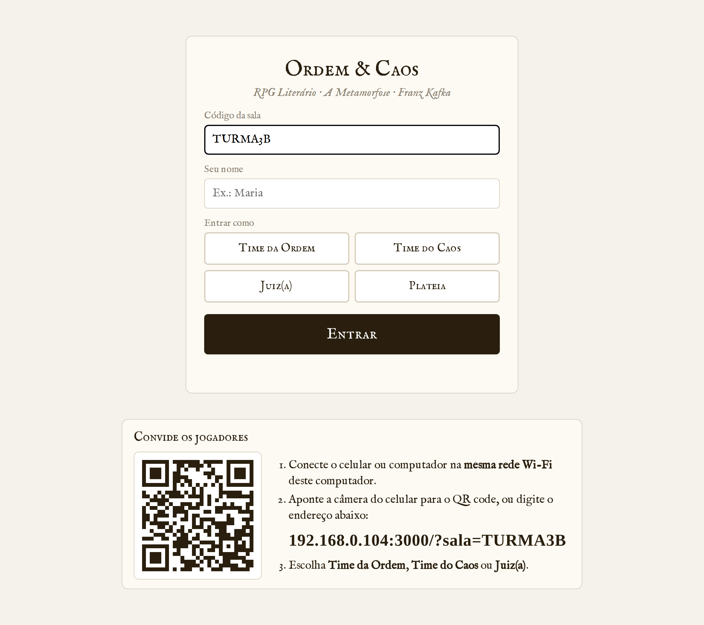
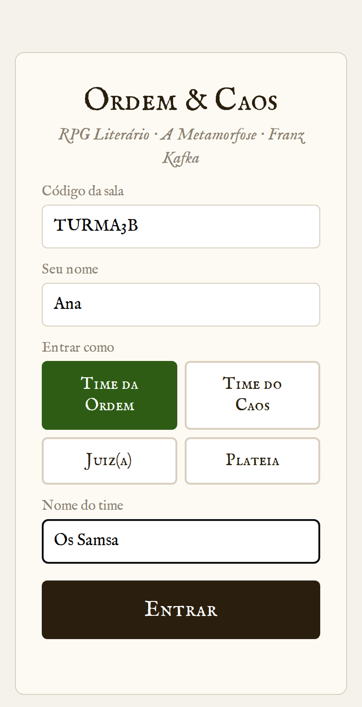
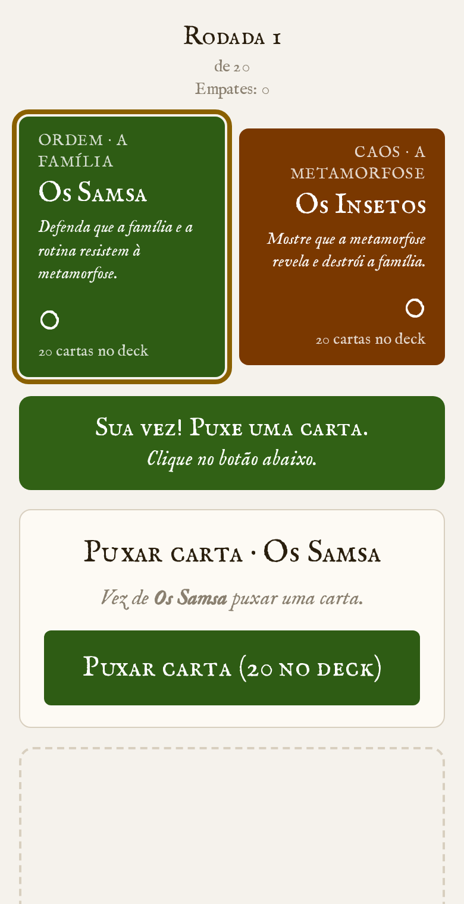
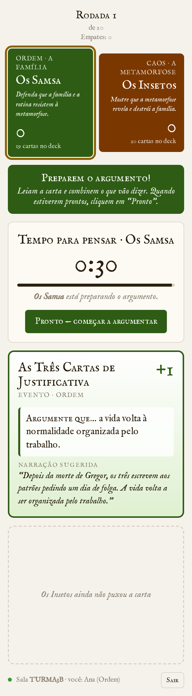
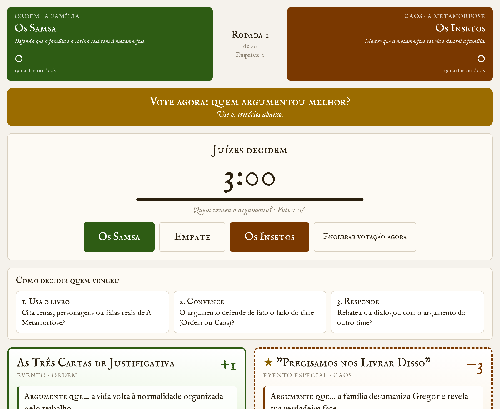

Não precisa instalar nada, nem criar conta, nem ter internet — só a rede Wi-Fi.
Baixe o arquivo do seu sistema e siga os passos. Os avisos de segurança são normais: aparecem porque o programa é novo e gratuito, não porque tem algo errado.
Não sabe qual é o seu? Menu da maçã (canto superior esquerdo) → Sobre Este Mac → "Chip" (Apple) ou "Processador" (Intel).
./OrdemECaos no terminal).Uma janela com textos vai aparecer. Ela é o "motor" do jogo: não feche essa janela durante a partida — fechar encerra o jogo. Pode minimizá-la.
O navegador abre sozinho no seu computador, com um QR code. Projete essa tela. Se quiser separar turmas, mude o código da sala (ex.: TURMA3B) — o QR code se atualiza.


Os alunos apontam a câmera do celular para o QR code (ou digitam o endereço), escrevem o nome e escolhem um papel:
Vários alunos podem entrar no mesmo time — todos veem a mesma tela. Quando os dois times estiverem na sala, o juiz clica em Iniciar partida.



O cronômetro avança sozinho. Quem vence a rodada ganha 1 ponto; o jogo termina após 20 rodadas ou quando o juiz clicar em Encerrar partida. Detalhe: quanto mais o Caos ganha, mais a tela "se metamorfoseia" — e uma barata aparece de vez em quando.
| Problema | O que fazer |
|---|---|
| O aluno escaneia o QR code, mas a página não abre | Confira se o celular está na mesma rede Wi-Fi do computador (não nos dados móveis 4G/5G). Algumas redes de escola bloqueiam a conexão entre aparelhos: nesse caso, ligue o roteador (hotspot) do seu celular, conecte o computador e os alunos nele, e feche e abra o jogo de novo. |
| No Windows, cliquei em "Cancelar" no aviso do Firewall | Iniciar → digite Firewall → "Permitir um aplicativo pelo Firewall" → Alterar configurações → marque OrdemECaos em "Privada". |
| O navegador não abriu sozinho | Abra o navegador e digite http://localhost:3000. |
| A janela diz que tem outro endereço (porta 3001, 3002…) | Tudo bem: outro programa estava usando a porta. Use o endereço que a janela mostra (o QR code já vem certo). |
| Fechei a janela sem querer | Abra o programa de novo. A partida recomeça do zero: os alunos precisam entrar novamente. |
| Um aluno recarregou a página ou fechou o navegador | É só abrir o mesmo endereço de novo — ele volta para o mesmo time. |
| A janela aparece e some na hora | Provavelmente o antivírus bloqueou. Libere o OrdemECaos no antivírus, ou extraia o .zip antes de abrir (não abra de dentro do .zip). |